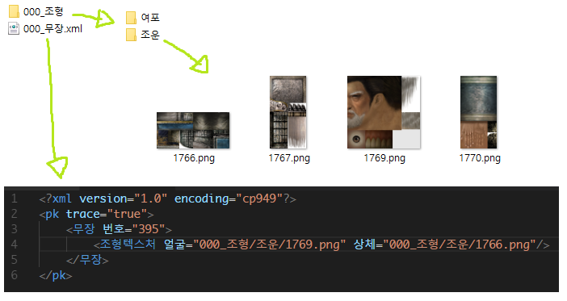

data文件夹
- data文件夹下所有的xml文件前面加 '#'，则启动时不加载.
- xml 不区分文件名，根节点的名称总是'pk'.
- 如出现重复的值将应用于以后加载的xml文件中的值。.
- xml文件中的数据将覆盖scenario.s11载入后的数据.
- 在设置图像、声音文件时，以xml文件路径为标准设置路径即可.
- 制作和发布自己的模型或声音时，可以按照以下步骤进行制作和发布。玩家可以简单地将其放入data文件夹中，而无需进行其他工作。 配置xml文件时，请确保尽可能减少重复数据。(避免给造型设置诸如附加能力之类的值)

media文件夹
- media文件夹中的文件会覆盖san11pkres.bin 文件中相同文件名的文件.
script 文件夹
- script文件夹下所有的cpp文件前面加 '#'，则启动时不加载。